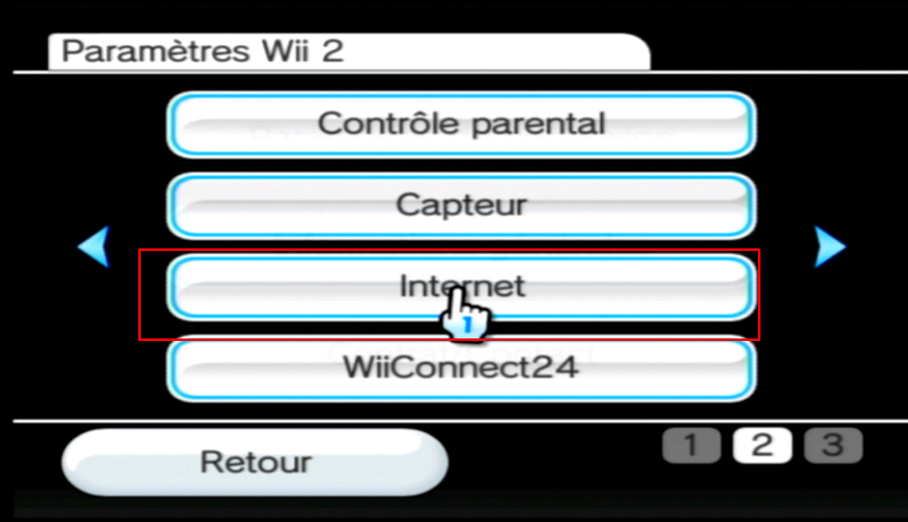
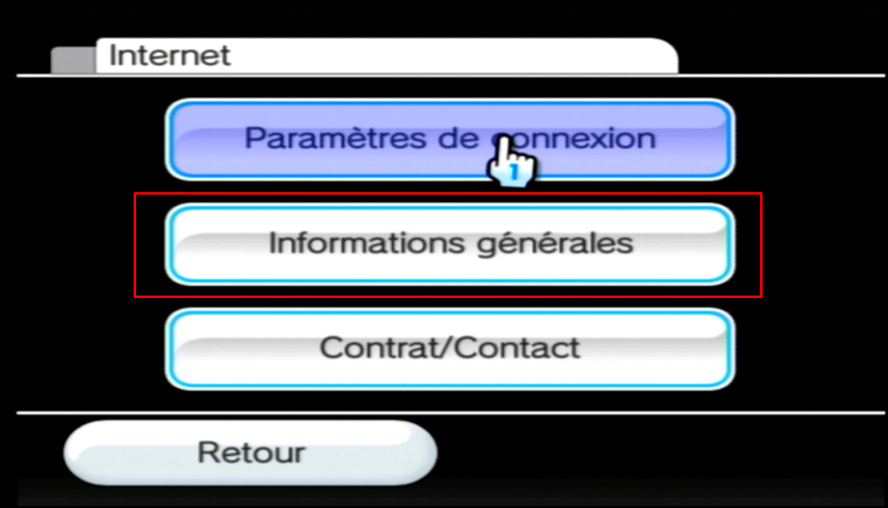
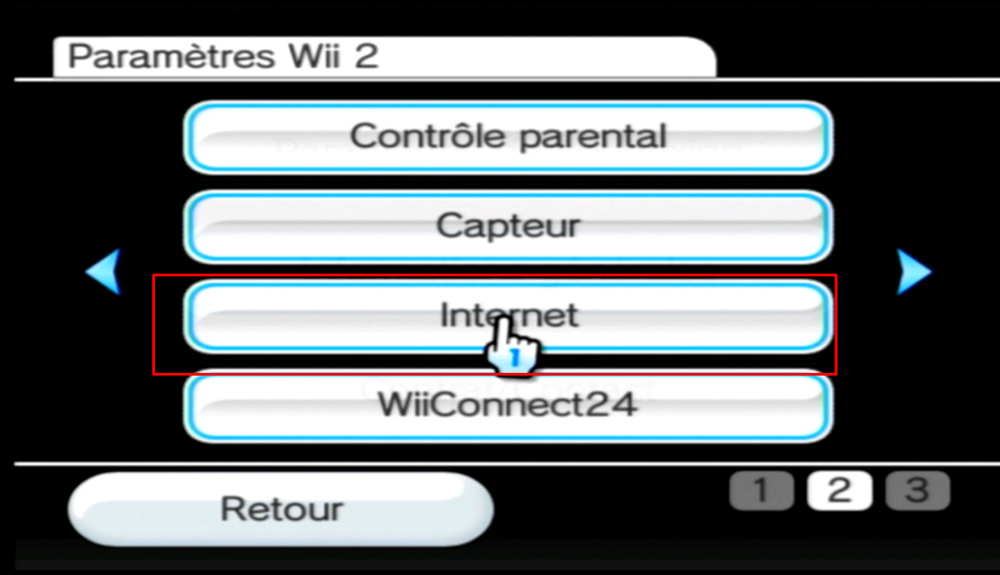
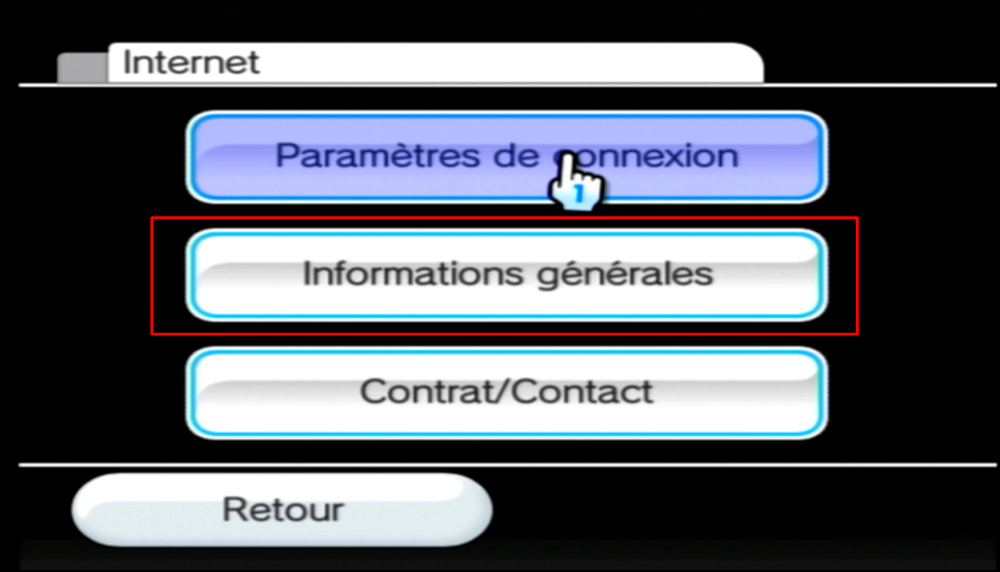

Rentrez votre adresse MAC.
Elle est trouvable dans les paramètres Internet de votre Wii. Exemple: 01-23-45-67-89-AB
Continuer
Comment savoir l'adresse MAC de ma Wii ? ►
Elle est trouvable dans les paramètres Internet de votre Wii. Exemple: 01-23-45-67-89-AB
 Allez dans la deuxième page, puis sélectionnez Internet.

Enfin, sélectionnez "Informations Générales", et vous pouvez prendre l'adresse MAC (WLAN)

Allez dans la deuxième page, puis sélectionnez Internet.

Enfin, sélectionnez "Informations Générales", et vous pouvez prendre l'adresse MAC (WLAN)
